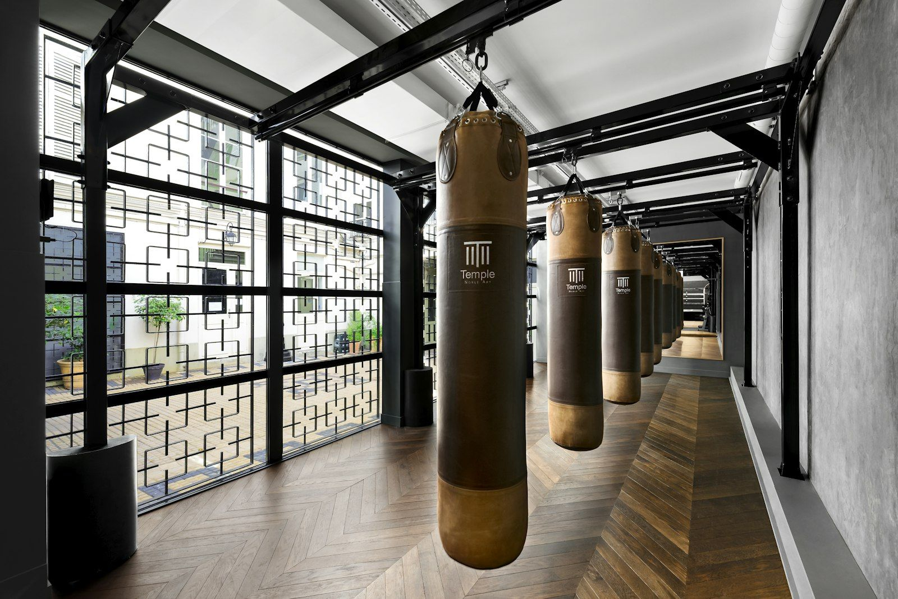

Accueil · Clubs · MMA Factory Paris
MMA Factory, la référence parisienne du MMA compétitif

À quelques centaines de mètres de l’Accor Arena, le MMA Factory occupe une place à part dans le paysage francilien. Installé au 91 boulevard Poniatowski, 75012 Paris, le club est devenu, depuis sa création, l’un des lieux où se croisent prospects nationaux, combattants déjà signés à l’UFC et pratiquants qui viennent simplement apprendre le métier sur un tapis exigeant. Ce portrait s’inscrit dans la rubrique Clubs de MMA français : documenter une salle, pas la vendre.
Le MMA Factory n’est pas une franchise anonyme. Son identité tient à une équipe visible, une offre multi-disciplines et une réputation bâtie sur des résultats en cage — en France comme à l’international.
Une adresse fixe, un volume pensé pour la performance
Le boulevard Poniatowski, dans le 12e arrondissement, situe le club entre le bois de Vincennes et le périphérique est. L’emplacement est stratégique pour une clientèle qui vient de toute l’Île-de-France : métro, tramway et axes routiers convergent vers Porte Dorée et Porte de Charenton.
Sur son site, le MMA Factory met en avant des espaces dédiés au grappling, à la boxe, à la muay thaï et à la préparation physique, autour d’une cage d’entraînement. L’ambition affichée est celle d’un centre complet : pas seulement un créneau MMA du jeudi soir, mais une structure où un compétiteur peut enchaîner striking, sol, lutte et conditionnement sans changer de club. Pour Paris, où les mètres carrés coûtent cher, ce regroupement reste relativement rare.
Le club accueille aussi bien des débutants motivés que des athlètes en camp. Les horaires et tarifs évoluent chaque saison ; nous ne les recopions pas ici pour éviter les informations périmées.
Benjamin Sarfati et Fernand Lopez : gouvernance et direction sportive
Benjamin Sarfati est identifié publiquement comme président du MMA Factory. Son rôle, tel que le club le présente, mêle gestion quotidienne, développement de la structure et lien avec les partenaires. Dans l’écosystème parisien, une salle de cette taille exige autant de rigueur administrative que de vision sportive — galas, licences, encadrement, flux de membres.
La figure la plus connue du staff reste Fernand Lopez, head coach et cofondateur historique. Ancien combattant, Lopez a construit une réputation internationale en coachant notamment Georges St-Pierre, puis en formant une génération de talents français. Sur le plan pédagogique, le MMA Factory revendique une approche « MMA complet » : frapper, amener au sol, contrôler, finir — avec une exigence de niveau qui filtre naturellement les profils loisirs des profils compétiteurs.
Cette double tête — Sarfati côté structure, Lopez côté méthode — explique en partie la stabilité du club dans un milieu où les salles ouvrent et ferment vite.
Une équipe de coachs identifiée
Le MMA Factory ne repose pas sur une seule personnalité. Le site et les communications du club listent plusieurs entraîneurs, chacun rattaché à une discipline ou à un public.
Taylor Lapilus, combattant UFC en poids coqs, intervient au sein du staff MMA. Son statut de compétiteur actif au plus haut niveau apporte un relais direct entre la théorie d’entraînement et la réalité d’un camp ou d’une semaine de pesée. Pour les élèves, c’est un signal clair : le programme est pensé par des gens qui montent encore sur la scène.
Samir Faiddine est associé à l’encadrement des jeunes et des sections kids — segment en forte croissance dans les clubs franciliens, où les parents cherchent un cadre sécurisé avant tout. D’autres noms apparaissent dans les pages publiques du club (striking, grappling, préparation), selon les disciplines et les créneaux ; nous ne prétendons pas lister ici l’intégralité d’un planning qui change avec les saisons.
L’important, pour le lecteur qui compare les salles, est la spécialisation visible : des référents par art, plutôt qu’un seul coach généraliste sur tous les tatamis.
Disciplines : MMA, boxe, BJJ, muay thaï, lutte
Le cœur reste le MMA, avec des cours par niveaux et des sessions orientées compétition. Autour gravitent :
- Boxe — travail de mains, distance, enchaînements ;
- BJJ (jiu-jitsu brésilien) — contrôle au sol, soumissions, sparring technique ;
- Muay thaï — clinch, coups de coude et de genou, conditionnement ;
- Lutte — projections, défense de takedown, chaîne wrestling-MMA.
Cette palette correspond au modèle « team fight » moderne : un compétiteur peut rester au Factory toute sa semaine sans fragmenter sa préparation entre trois adresses. Les pratiquants loisirs en profitent aussi, en choisissant une discipline porte d’entrée avant d’élargir.
Publics, ambiance et visibilité
Le MMA Factory attire une clientèle mixte : Parisiens du 12e, banlieue proche, combattants de passage en camp, visiteurs étrangers attirés par le nom Lopez. L’ambiance est souvent décrite comme exigeante — peu de place pour le spectacle gratuit — mais structurée. Les débutants sont accueillis via des niveaux distincts ; les compétiteurs gravitent vers des créneaux plus denses et un sparring encadré.
La visibilité médiatique du club dépasse Poniatowski : plusieurs combattants signés UFC ou ARES y ont traîné ou s’y entraînent encore. Nous n’établissons pas ici une liste de « produits » du Factory — les carrières évoluent, les camps se déplacent — mais le lien entre la salle et la haute scène française est un fait structurant du paysage parisien.
À l’approche de UFC Paris 2026, le club bénéficie aussi de la proximité géographique avec l’Accor Arena : une semaine d’événement majeur en ville attire toujours du monde vers les salles du 12e, qu’il s’agisse de fans ou de professionnels.
Événements et place dans l’écosystème français
Le MMA Factory n’est pas, à proprement parler, une ligue de galas comme certaines structures toulousaines ou lyonnaises. Son rôle est surtout celui de forge : préparer, puis laisser les combattants briller sous d’autres bannières (UFC, ARES, IMMAF, etc.). Des séminaires, des stages et des sessions ouvertes ponctuent l’année ; le détail est à consulter directement auprès du club.
Dans la cartographie des clubs français, le Factory occupe le segment « haut niveau métropolitain » — comparable, par ambition sportive, à quelques autres pôles régionaux, avec la particularité parisienne du coût et de la concurrence inter-salles.
Pour aller plus loin
Planning, modalités d’essai et tarifs changent ; la source la plus fiable reste le site officiel. Le club les publie sur mma-factory.fr, avec l’adresse du boulevard Poniatowski et les contacts usuels.
UFC.FR n’est pas partenaire commercial du MMA Factory. Ce portrait documente une salle repère à Paris ; le lien vers le site du club sert le lecteur qui souhaite vérifier les horaires — ce n’est pas une publicité rémunérée.